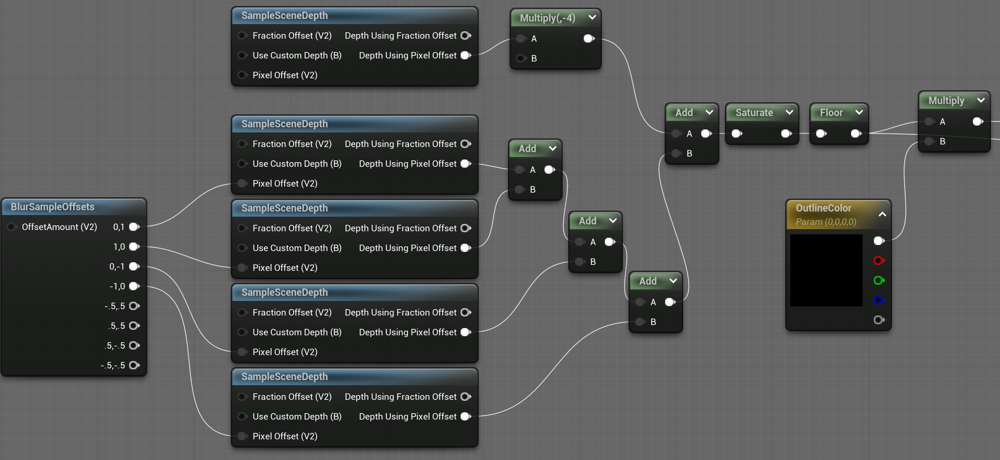
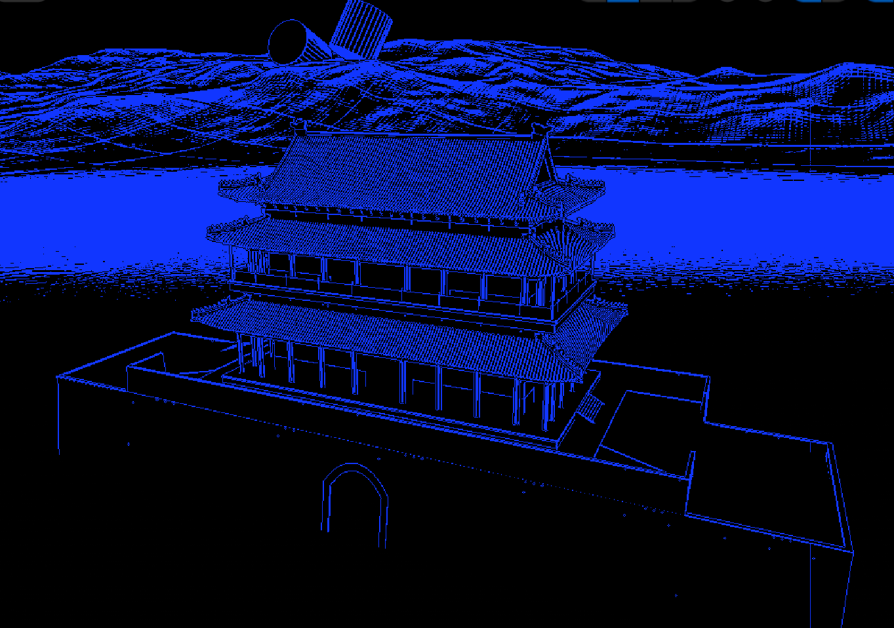

Outline
在材质编辑器中实现描边效果的方法如下图 
SampleSceneDepth获取场景深度，并考虑了CustomDepth和屏幕像素偏移的输入。 Pixel Offset这个输入就是让整个深度采样的工作向某个方向偏移一定的像素值。
BlurSampleOffsets的8个输出端分别是将一个二维向量向上、右、下、左四个方向分别偏移1个单位、0.5个单位。其输入可以接受一个二维向量，默认是（1，1）。
将场景深度值的采样分别向四个方向偏移1个单位，并将采样得来的深度值加起来，最后再减去原本的值的4倍，就可以得到深度值变化较大的区域。
最后使用Saturate限制值为0-1，使用Floor的作用是过滤掉一些微小的变化。
